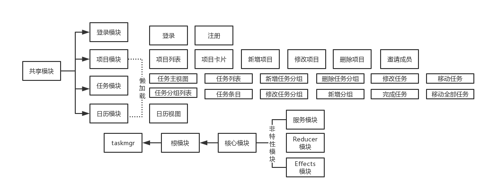
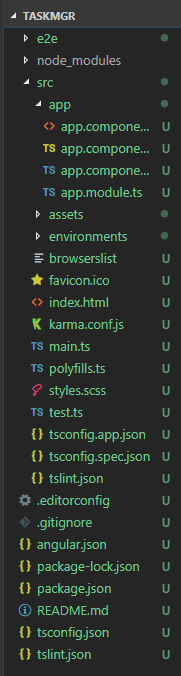
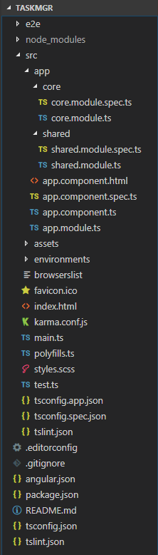

Angular Demo One - 打造企业级协作平台
create by jsliang on 2018-9-5 11:56:07
Recently revised in 2019-2-11 10:05:39
目录
| 章节名 | 导航 |
|---|---|
| 第一章 | 环境搭建 |
| 第二章 | 项目工程结构介绍 UI |
| 第三章 | UI整体布局 |
| More... | 已断更！缺乏对应基础，补基础去了！ |
第一章 环境搭建
1. 安装 Angular：
npm i @angular/cli -g
_ _ ____ _ ___
/ \ _ __ __ _ _ _| | __ _ _ __ / ___| | |_ _|
/ △ \ | '_ \ / _` | | | | |/ _` | '__| | | | | | |
/ ___ \| | | | (_| | |_| | | (_| | | | |___| |___ | |
/_/ \_\_| |_|\__, |\__,_|_|\__,_|_| \____|_____|___|
|___/
Angular CLI: 6.1.5
Node: 8.11.2
OS: win32 x64
Angular:
...
Package Version
------------------------------------------------------
@angular-devkit/architect 0.7.5
@angular-devkit/core 0.7.5
@angular-devkit/schematics 0.7.5
@schematics/angular 0.7.5
@schematics/update 0.7.5
rxjs 6.3.2
typescript 2.9.2
2. 安装 VS Code 插件：
Debugger for Chrome、Angular 6 Snippets
3. 安装开发插件：
安装 Chrome 关于 Angular 的开发插件：点击前往
4. 常用命令：
npm i -S —— 软件开发依赖
npm i -D —— 软件生产依赖
ng new —— 新建 Angular项目
ng build -prod —— 生产环境编译
ng server —— 启动开发服务器
5. Mock Rest API：
- json-server: 用户快速搭建 REST API 的利器。
- 安装：
npm i json-server -g，版本为0.14.0。 - 启动：
json-server /json 文件位于的目录/*.json。 - 支持 GET， POST， PUT， PATCH， DELETE 等 REST 命令。
6. 测试 REST API：
- 几种常用的 API 测试工具：
- 使用 Postman 测试常用的 API：地址
- 使用 VS Code 的 REST Client 插件
此刻， jsliang 的
node等版本为：node: 8.11.2npm: 6.3.0cnpm: 6.0.0
第二章 项目工程结构介绍

2.1 文件组织约定
- 目录结构按相对独立的功能划分
- src/app 下第一层子目录中除了模块，还有领域对象、动画和工具文件夹
- 资源存放在 src/assets 目录下
2.2 命名约定
- 模块和组件的类文件都使用 index.ts 的命名约定
2.3 新建项目
ng new taskmgr -si --style=scss —— 新建 angular 项目
// 注： -si === --skip-install
cnpm i —— 安装依赖
ng g m core —— 创建核心模块
ng g m shared —— 创建分享模块


2.4 添加代码
taskmgr/src/app/core/core.module.ts
// 原代码
import { NgModule } from '@angular/core';
import { CommonModule } from '@angular/common';
@NgModule({
imports: [
CommonModule
],
declarations: []
})
export class CoreModule { }
// 更新后代码
import { NgModule, SkipSelf } from '@angular/core';
import { CommonModule } from '@angular/common';
@NgModule({
imports: [
CommonModule
],
declarations: []
})
export class CoreModule {
constructor(parent: CoreModule) {
if(parent) {
throw new Error("模块已经存在，不能再次加载！");
}
}
}
taskmgr/src/app/shared/shared.module.ts
// 原代码
import { NgModule } from '@angular/core';
import { CommonModule } from '@angular/common';
@NgModule({
imports: [
CommonModule
],
declarations: []
})
export class SharedModule { }
// 更新后代码
import { NgModule } from '@angular/core';
import { CommonModule } from '@angular/common';
@NgModule({
imports: [
CommonModule
],
exports: [
CommonModule
],
declarations: []
})
export class SharedModule { }
taskmgr/src/app/app.module.ts
// 原代码
import { BrowserModule } from '@angular/platform-browser';
import { NgModule } from '@angular/core';
import { AppComponent } from './app.component';
@NgModule({
declarations: [
AppComponent
],
imports: [
BrowserModule
],
providers: [],
bootstrap: [AppComponent]
})
export class AppModule { }
// 更新后代码
import { BrowserModule } from '@angular/platform-browser';
import { NgModule } from '@angular/core';
import { CoreModule } from './core/core.module';
import { AppComponent } from './app.component';
@NgModule({
declarations: [
AppComponent
],
imports: [
BrowserModule,
CoreModule
],
providers: [],
bootstrap: [AppComponent]
})
export class AppModule { }
第三章 UI整体布局
3.1 修改代码
ng g c core/header --spec=falseng g c core/footer --spec=falseng g c core/sidebar --spec=false
taskmgr/src/app/app.component.html
// 源代码
<!--The content below is only a placeholder and can be replaced.-->
<div style="text-align:center">
<h1>
Welcome to {{ title }}!
</h1>
<img width="300" alt="Angular Logo" src="">
</div>
<h2>Here are some links to help you start: </h2>
<ul>
<li>
<h2><a target="_blank" rel="noopener" href="https://angular.io/tutorial">Tour of Heroes</a></h2>
</li>
<li>
<h2><a target="_blank" rel="noopener" href="https://github.com/angular/angular-cli/wiki">CLI Documentation</a></h2>
</li>
<li>
<h2><a target="_blank" rel="noopener" href="https://blog.angular.io/">Angular blog</a></h2>
</li>
</ul>
// 修改后
<div>
<header>
<app-header></app-header>
</header>
<main></main>
<footer>
<app-footer></app-footer>
</footer>
</div>
taskmgr/src/app/core/core.module.ts
// 源代码
// 修改后
jsliang的文档库 由 梁峻荣 采用 知识共享 署名-非商业性使用-相同方式共享 4.0 国际 许可协议进行许可。
基于https://github.com/LiangJunrong/document-library上的作品创作。
本许可协议授权之外的使用权限可以从 https://creativecommons.org/licenses/by-nc-sa/2.5/cn/ 处获得。